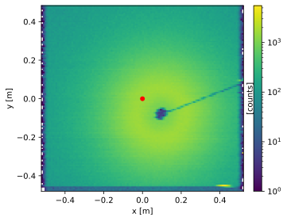
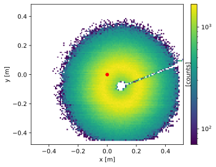
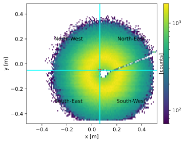
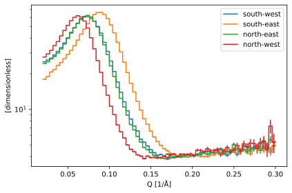
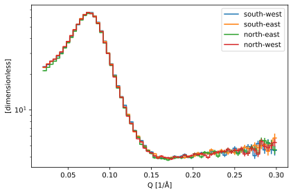

Beam center finder
Contents
Beam center finder#
In SANS experiments, it is essential to find the center of the scattering pattern in order to allow symmetric summation of the scattering intensity around the beam (i.e. computing a one-dimensional \(I(Q)\)). As detector panels can move, the center of the beam will not always be located at the same place on the detector panel from one experiment to the next.
Here we describe the beam center finding algorithm, which uses a combination of a center-of-mass calculation and an iterative refinement on a computed scattering cross-section to find the center of the scattering pattern.
[1]:
import scipp as sc
from scipp.constants import g
from ess import loki, sans
from ess.sans import beam_center_finder as bcf
from ess.logging import configure_workflow
import plopp as pp
[2]:
logger = configure_workflow('sans_beam_center_finder', filename='sans.log')
We begin by setting some parameters relevant to the current sample.
[3]:
# Include effects of gravity?
gravity = True
# Wavelength binning
wavelength_bins = sc.linspace(
dim='wavelength', start=2.0, stop=16.0, num=141, unit='angstrom'
)
# Define Q binning
q_bins = sc.linspace('Q', 0.02, 0.3, 71, unit='1/angstrom')
# Define coordinate transformation graph
graph = sans.conversions.sans_elastic(gravity=gravity)
Next we load the data files for the sample and direct runs:
[4]:
sample = loki.io.load_sans2d(filename=loki.data.get_path('SANS2D00063114.hdf5'))
direct = loki.io.load_sans2d(filename=loki.data.get_path('SANS2D00063091.hdf5'))
# Add X, Y coordinates
sample.coords['x'] = sample.coords['position'].fields.x
sample.coords['y'] = sample.coords['position'].fields.y
# Add gravity coordinate
sample.coords["gravity"] = sc.vector(value=[0, -1, 0]) * g
Masking bad pixels#
We create a quick image of the data (summing along the tof dimension) to inspect its contents. We see a diffuse scattering pattern, centered around a dark patch with an arm to the north-east; this is the sample holder. It is clear that the sample and the beam are not in the center of the panel, which is marked by the red dot
[5]:
image = sample.sum('tof').copy().hist(y=120, x=128)
p = image.plot(norm='log', aspect='equal')
p.ax.plot(0, 0, 'o', color='red', ms=5)
p
[5]:

To avoid skew in future comparisons of integrated intensities between the different regions of the detector panel, we mask out the sample holder, using a low-counts threshold. This also masks out the edges of the panel, which show visible artifacts. We also mask out a region in the bottom right corner where a group of hot pixels is apparent. Finally, there is a single hot pixel in the detector on the right edge of the panel with counts in excess of 1000, which we also remove.
[6]:
summed = sample.sum('tof')
low_counts = summed.data < sc.scalar(70, unit='counts')
high_counts = summed.data > sc.scalar(1000, unit='counts')
lower_right = (sample.coords['x'] > sc.scalar(0.35, unit='m')) & (
sample.coords['y'] < sc.scalar(-0.4, unit='m')
)
sample.masks['low_counts'] = low_counts
sample.masks['high_counts'] = high_counts
sample.masks['lower_right'] = lower_right
We look at the image again, to verify we have masked the desired regions.
[7]:
image = sample.sum('tof').copy().hist(y=120, x=128)
p = image.plot(norm='log', aspect='equal')
p.ax.plot(0, 0, 'o', color='red', ms=5)
p
[7]:

Description of the procedure#
The procedure to determine the precise location of the beam center is the following:
obtain an initial guess by computing the center-of-mass of the pixels, weighted by the counts on each pixel
from that initial guess, divide the panel into 4 quadrants
compute \(I(Q)\) inside each quadrant and compute the residual difference between all 4 quadrants
iteratively move the centre position and repeat 2. and 3. until all 4 \(I(Q)\) curves lie on top of each other
Initial guess: center-of-mass calculation#
Computing the center-of-mass is straightforward using the vector position coordinate.
[8]:
com = bcf.center_of_mass(sample)
# We compute the shift between the incident beam direction and the center-of-mass
incident_beam = sample.transform_coords('incident_beam', graph=graph).coords[
'incident_beam'
]
n_beam = incident_beam / sc.norm(incident_beam)
com_shift = com - sc.dot(com, n_beam) * n_beam
com_shift
[8]:
- ()vector3m[ 0.0642058 -0.05088138 0. ]
Values:
array([ 0.0642058 , -0.05088138, 0. ])
We can now plot the center-of-mass on the same image as before:
[9]:
xc = com_shift.fields.x
yc = com_shift.fields.y
p = image.plot(norm='log', aspect='equal')
p.ax.plot(xc.value, yc.value, 'o', color='red', ms=5)
p
[9]:
Making 4 quadrants#
We divide the panel into 4 quadrants.
[10]:
p = image.plot(norm='log', aspect='equal')
p.ax.plot(xc.value, yc.value, 'o', color='red', ms=5)
p.ax.axvline(xc.value, color='cyan')
p.ax.axhline(yc.value, color='cyan')
dx = 0.25
p.ax.text(xc.value + dx, yc.value + dx, 'North-East', ha='center', va='center')
p.ax.text(xc.value - dx, yc.value + dx, 'North-West', ha='center', va='center')
p.ax.text(xc.value - dx, yc.value - dx, 'South-East', ha='center', va='center')
p.ax.text(xc.value + dx, yc.value - dx, 'South-West', ha='center', va='center')
p
[10]:

Converting to \(Q\) inside each quadrant#
We now perform a full:math:`^1 <#footnote1>`__ \(I(Q)\) reduction (see here for more details) inside each quadrant. The reduction involves computing a normalizing term which, for the most part, does not depend on pixel positions. We therefore compute this once, before starting iterations to refine the position of the center.
First compute normalizing term to avoid loop over expensive compute#
To compute the denominator, we need to preprocess the monitor data from the sample and direct runs. This involved converting them to wavelength and removing any background noise from the signal.
[11]:
# Extract monitor data
sample_monitors = {
'incident': sample.attrs["monitor2"].value,
'transmission': sample.attrs["monitor4"].value,
}
direct_monitors = {
'incident': direct.attrs["monitor2"].value,
'transmission': direct.attrs["monitor4"].value,
}
# Define the range where monitor data is considered not to be noise
non_background_range = sc.array(
dims=['wavelength'], values=[0.7, 17.1], unit='angstrom'
)
# Pre-process monitor data
sample_monitors = sans.i_of_q.preprocess_monitor_data(
sample_monitors,
non_background_range=non_background_range,
wavelength_bins=wavelength_bins,
)
direct_monitors = sans.i_of_q.preprocess_monitor_data(
direct_monitors,
non_background_range=non_background_range,
wavelength_bins=wavelength_bins,
)
We then feed this, along with the sample run data (needed to include the detector pixel solid angles), to a function which will compute the normalization term.
[12]:
norm = sans.normalization.iofq_denominator(
data=sample,
data_transmission_monitor=sc.values(sample_monitors['transmission']),
direct_incident_monitor=sc.values(direct_monitors['incident']),
direct_transmission_monitor=sc.values(direct_monitors['transmission']),
)
norm
[12]:
- spectrum: 61440
- wavelength: 140
- wavelength(wavelength)float64Å2.05, 2.150, ..., 15.850, 15.95
Values:
array([ 2.05, 2.15, 2.25, 2.35, 2.45, 2.55, 2.65, 2.75, 2.85, 2.95, 3.05, 3.15, 3.25, 3.35, 3.45, 3.55, 3.65, 3.75, 3.85, 3.95, 4.05, 4.15, 4.25, 4.35, 4.45, 4.55, 4.65, 4.75, 4.85, 4.95, 5.05, 5.15, 5.25, 5.35, 5.45, 5.55, 5.65, 5.75, 5.85, 5.95, 6.05, 6.15, 6.25, 6.35, 6.45, 6.55, 6.65, 6.75, 6.85, 6.95, 7.05, 7.15, 7.25, 7.35, 7.45, 7.55, 7.65, 7.75, 7.85, 7.95, 8.05, 8.15, 8.25, 8.35, 8.45, 8.55, 8.65, 8.75, 8.85, 8.95, 9.05, 9.15, 9.25, 9.35, 9.45, 9.55, 9.65, 9.75, 9.85, 9.95, 10.05, 10.15, 10.25, 10.35, 10.45, 10.55, 10.65, 10.75, 10.85, 10.95, 11.05, 11.15, 11.25, 11.35, 11.45, 11.55, 11.65, 11.75, 11.85, 11.95, 12.05, 12.15, 12.25, 12.35, 12.45, 12.55, 12.65, 12.75, 12.85, 12.95, 13.05, 13.15, 13.25, 13.35, 13.45, 13.55, 13.65, 13.75, 13.85, 13.95, 14.05, 14.15, 14.25, 14.35, 14.45, 14.55, 14.65, 14.75, 14.85, 14.95, 15.05, 15.15, 15.25, 15.35, 15.45, 15.55, 15.65, 15.75, 15.85, 15.95])
- (spectrum, wavelength)float64counts0.075, 0.094, ..., 0.001, 0.001
Values:
array([[0.07465485, 0.09399527, 0.1167066 , ..., 0.00128523, 0.00123268, 0.00125358], [0.07466466, 0.09400762, 0.11672193, ..., 0.0012854 , 0.00123285, 0.00125375], [0.07467443, 0.09401992, 0.11673721, ..., 0.00128557, 0.00123301, 0.00125391], ..., [0.07466547, 0.09400864, 0.11672321, ..., 0.00128542, 0.00123286, 0.00125376], [0.07465571, 0.09399635, 0.11670794, ..., 0.00128525, 0.0012327 , 0.0012536 ], [0.0746459 , 0.093984 , 0.11669261, ..., 0.00128508, 0.00123254, 0.00125343]])
- high_counts(spectrum)boolFalse, False, ..., False, False
Values:
array([False, False, False, ..., False, False, False]) - low_counts(spectrum)boolTrue, True, ..., True, True
Values:
array([ True, True, True, ..., True, True, True]) - lower_right(spectrum)boolFalse, False, ..., False, False
Values:
array([False, False, False, ..., False, False, False])
Compute \(I(Q)\) inside the 4 quadrants#
We begin by defining several parameters which are required to compute \(I(Q)\).
[13]:
# Define 4 phi bins
pi = sc.constants.pi.value
phi_bins = sc.linspace('phi', -pi, pi, 5, unit='rad')
# Name the quadrants
quadrants = ['south-west', 'south-east', 'north-east', 'north-west']
# Define a wavelength range to use
wavelength_range = sc.concat(
[wavelength_bins.min(), wavelength_bins.max()], dim='wavelength'
)
We now use a function which will apply the center offset to the pixel coordinates, and compute \(I(Q)\) inside each quadrant.
[14]:
grouped = sans.beam_center_finder.iofq_in_quadrants(
xy=[com_shift.fields.x.value, com_shift.fields.y.value],
sample=sample,
norm=norm,
graph=graph,
q_bins=q_bins,
gravity=gravity,
wavelength_range=wavelength_range,
)
We can now plot on the same figure all 4 \(I(Q)\) curves for each quadrant.
[15]:
pp.plot(grouped, norm='log')
[15]:

As we can see, the overlap between the curves from the 4 quadrants is not satisfactory. We will now use an iterative procedure to improve our initial guess, until a good overlap between the curves is found.
For this, we first define a cost function sans.beam_center_finder.cost, which gives us an idea of how good the overlap is:
where \(\overline{I}(Q)\) is the mean intensity of the 4 quadrants (represented by \(i\)) as a function of \(Q\). This is basically a weighted mean of the square of the differences between the \(I(Q)\) curves in the 4 quadrants with respect to \(\overline{I}(Q)\), and where the weights are \(\overline{I}(Q)\).
Next, we iteratively minimize the computed cost (this is using Scipy’s optimize.minimize utility internally; see here for more details).
[16]:
# The minimizer works best if given bounds, which are the bounds of our detector panel
x = sample.coords['position'].fields.x
y = sample.coords['position'].fields.y
res = bcf.minimize(
sans.beam_center_finder.cost,
x0=[com_shift.fields.x.value, com_shift.fields.y.value],
args=(sample, norm, graph, q_bins, gravity, wavelength_range),
bounds=[(x.min().value, x.max().value), (y.min().value, y.max().value)],
)
res
[16]:
message: Optimization terminated successfully.
success: True
status: 0
fun: 0.9083893895149231
x: [ 9.330e-02 -8.079e-02]
nit: 20
nfev: 37
final_simplex: (array([[ 9.330e-02, -8.079e-02],
[ 9.347e-02, -8.129e-02],
[ 9.242e-02, -8.121e-02]]), array([ 9.084e-01, 9.100e-01, 9.882e-01]))
Once the iterations completed, the returned object contains the best estimate for the beam center:
[17]:
res.x
[17]:
array([ 0.09329701, -0.08079138])
We can now feed this value again into our iofq_in_quadrants function, to inspect the \(Q\) intensity in all 4 quadrants:
[18]:
grouped = sans.beam_center_finder.iofq_in_quadrants(
xy=[res.x[0], res.x[1]],
sample=sample,
norm=norm,
graph=graph,
q_bins=q_bins,
gravity=gravity,
wavelength_range=wavelength_range,
)
pp.plot(grouped, norm='log')
[18]:

The overlap between the curves is excellent, allowing us to safely perform an azimuthal summation of the counts around the beam center.
As a consistency check, we plot the refined beam center position onto the detector panel image:
[19]:
p = sample.sum('tof').copy().hist(y=120, x=128).plot(norm='log', aspect='equal')
p.ax.plot(res.x[0], res.x[1], 'o', color='red', ms=5)
p
[19]:
Footnotes#
In the full \(I(Q)\) reduction, there is a term \(D(\lambda)\) in the normalization called the “direct beam” which gives the efficiency of the detectors as a function of wavelength. Because finding the beam center is required to compute the direct beam in the first place, we do not include this term in the computation of \(I(Q)\) for finding the beam center. This changes the shape of the \(I(Q)\) curve, but since it changes it in the same manner for all \(\phi\) angles, this does not affect the results for finding the beam center.